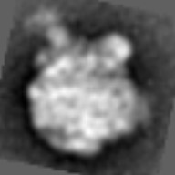
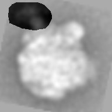

| .OPERATION: | SUB 2 | ; Pairwise subtract series of images |
| .FIRST INPUT FILE NAME OR TEMPLATE: | sav_avg000_ip* | ; Template for images (input) |
| .FILE NUMBERS OR SELECTION DOC. FILE NAME: | 3 | ; Image numbers |
| .SECOND INPUT FILE NAME OR TEMPLATE: | sav_avg000_ip3_msk | ; Template for images (input) |
| .OUTPUT FILE NAME OR TEMPLATE: | sub2_stk@* | ; Template for images (output) |
| .FILE NUMBERS OR SELECTION DOC. FILE NAME: | 3 | ; Image numbers |
| FIRST INPUT IMAGE (Only one image in series) |
|---|
|  |
| sav_avg000_ip3 |
| IMAGE TO BE SUBTRACTEDi (Used for all images in series) |
|---|
| sav_avg000_ip3_msk |
| OUTPUT IMAGE STACK (one image in stack) |
|---|
|  |
| sub2 |